생산자동화산업기사 (2007-05-13 기출문제)
1과목: 기계가공법 및 안전관리
1. 그림과 같은 정면 밀링 커터에서 엑시얼 경사각은?
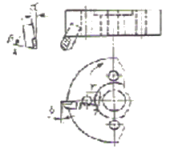
- α
- β
- r
- δ
(정답률: 45%)

2. 선반에서 일반적인 안전수칙으로 틀린 것은?
- 연속으로 생성되는 칩은 칩제거용 기구를 사용하여 제거한다.
- 가동전에 주유부분에는 반드시 주유한다.
- 회전하고 있는 부분을 맨손으로 점검하는 것은 위험하므로 장갑을 끼고 점검한다.
- 선반이 가동될 때에는 자리를 이탈하지 않는다.
(정답률: 93%)
3. 벨트를 폴리에 걸 때는 어떤 상태에서 해야 안전한가?
- 저속 회전 상태
- 중속 회전 상태
- 회전 중지 상태
- 고속 회전 상태
(정답률: 80%)
4. 밀링머신 종류 중 생산형 밀링 머신은?
- 수직 밀링 머신
- 수평 밀링 머신
- 플래노 밀러
- 회전 밀러
(정답률: 24%)
5. 산화알루미늄 분말에 Si 및 Mg 등의 산화물 과 미량의 다른 원소를 첨가하여 고온에서도 경도가 높고 내마멸성이 좋으며, 초경합금보다 더욱 높은 속도로 절삭할 수 있으나, 취약한 것이 결점인 공구 재료는?
- 고속도강
- 스텔라이트
- 다이아몬드
- 세라믹
(정답률: 61%)
6. 빌트 업 에지(built-up edge)의 방지 대책이 아닌 것은?
- 절삭 깊이의 증대
- 바이트 상면 경사각의 증대
- 절삭속도의 증대
- 적당한 윤활유의 사용
(정답률: 78%)
7. 센터리스의(center less) 연삭법의 장점이 아닌 것은?
- 대형 중량물의 연삭이 용이하다.
- 긴 축 재료의 연삭이 가능하다.
- 연속작업을 할 수 있어 대량생산에 적합하다.
- 연삭여유가 작아도 된다.
(정답률: 52%)
8. 연삭숯돌표시법의 WA-60-K-m-V에서 결합도를 나타내는 것은?
- WA
- V
- K
- m
(정답률: 45%)
9. 호빙 머신의 차동장치는 어느 경우에 가장 적합한가?
- 워엄기어를 절삭 가공할 때
- 베벨기어를 절삭 가공할 때
- 헬리컬 기어를 절삭 가공절삭
- 치형을 정밀하게 완성 가공할 때
(정답률: 47%)
10. 세이퍼 가공에서 행정길이가 300mm, 절삭속도가 40 m/min, 절삭 행정의 시간과 바이트 1왕복 시간의 비 k=0.6으로 했을때, 바이트의 매분 왕복횟수는 얼마인가?
- 40
- 60
- 80
- 100
(정답률: 42%)
11. 절삭유의 사용목적으로 틀린 것은?
- 공구의 냉각
- 공작물의 냉각
- 칩의 제거
- 마찰계수의 증가
(정답률: 74%)
12. 슈퍼피니싱의 특징 설명으로 틀린 것은?
- 원통형의 가공물 외면, 내면과 평면 등의 정밀 다듬질이 가능하다.
- 다듬질 된 면은 평활하고, 방향성이 없다.
- 입도가 비교적 크고, 강한 숯돌에 고압으로 가압하여 연마하는 방법이다.
- 가공에 의한 변질층의 두께가 매우 작다.
(정답률: 61%)
13. 직접 측정의 장점으로 틀린 것은?
- 측정기의 측정범위가 다른 측정법보다 넓다.
- 피측정물의 실제치수를 직접 읽을 수 있다.
- 눈금을 읽기 쉽고 측정시간이 적게 걸린다.
- 수량이 적고 종류가 많은 제품의 측정에 적합하다.
(정답률: 50%)
14. 선반가공에서 길이가 지름의 20배가 넘는 환봉을 절삭 할때 진동을 방지하기 위해 사용하는 부속장치는?
- 심봉(mandrel)
- 돌리개(dog)
- 방진구(work rest)
- 돌림판(driving plate)
(정답률: 54%)
15. 그림과 같은 테이퍼를 선반에서 심압대를 편위시켜 절삭코저 한다. 심압대를 몇mm 편위 시켜야 되는가?
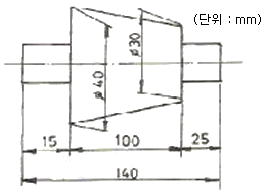
- 7
- 8
- 9
- 10
(정답률: 40%)
16. 밀링머신의 일반적인 부속장치에 해당되지 않는 것은?
- 회전 테이블
- 슬로팅장치
- 래크 절삭장치
- 브로칭 장치
(정답률: 47%)
17. 한계게이지의 특징 설명 중 틀린 것은?
- 제품사이의 호환성이 잇다.
- 제품의 실제치수를 읽을 수가 없다.
- 조작이 간단하므로 경험이 필요하지 않다.
- 1개의 치수마다 4개의 게이지가 필요하다.
(정답률: 37%)
18. 하이트 게이지(height gauge)에서 그 종류의 형(型)에 해당되는 것은?
- HA형
- HB형
- HC형
- HD형
(정답률: 53%)
19. 직접드릴링 머신의 크기에서 스윙을 나타내는 것은?
- 컬럼의 중심부터 주축 표면까지 거리의 3배
- 주축의 중심부터 컬럼 표면까지 거리의 3배
- 컬럼의 중심부터 주축 표면까지 거리의 2배
- 주축의 중심부터 컬럼 표면까지 거리의 2배
(정답률: 45%)
20. 액체 호닝에 대한 특징 설명 중 틀린 것은?
- 공작물 표면의 산화막이나 거스러미(burr)를 제거하기 쉽다.
- 피닝 효과가 있다.
- 형상이 복잡한 것도 쉽게 가공한다.
- 가공시간이 길다.
(정답률: 52%)
2과목: 기계제도 및 기초공학
21. 구조물에 외력이 작용할 때 단위 면적당 발생하는 내부 저항력은 무엇인가?
- 하중
- 응력
- 변형력
- 탄성률
(정답률: 74%)
22. 다음 중 힘의 3요소에 해당하지 않는 것은?
- 크기
- 방향
- 합성력
- 작용점
(정답률: 75%)
23. 국제적 표준 단위계로 사용되고 있는 SI 단위계의 기본단위가 틀린 것은?
- cm
- m
- s
- kg
(정답률: 50%)
24. 저항이 R인 백열전구를 세 개를 연결하였을 때의 전체 저항은?
- R
- R / 3
- 3R
- 1 / 3R
(정답률: 61%)
25. "액체에 가해준 압력은 그 크기가 변하지 않고 액체의 모든 부분에 똑같이 전달된다."라는 정의는?( 단, 밀폐된 공간의 액체의 경우이다.)
- 토리첼리의 원리
- 베르누이의 정리
- 파스칼의 원리
- 보일-샬의 법칙
(정답률: 81%)
26. 저항 R을 40[Ω]이라고 하면 이 저항에 3[A]의 전류를 흘리기 위하여 몇 볼트의 전압을 가해야 하는가?
- 120 [V]
- 130 [V]
- 140 [V]
- 150 [V]
(정답률: 91%)
27. 3m/sec로 움직이는 무인 반송차가 10초 후 3m/sec의 속도로 이동하고 있었다. 무인 반송차의 가속도 값은?
- 10 m/sec2
- 3 m/sec2
- 1 m/sec2
- 0 m/sec2
(정답률: 59%)
28. 다음 그림과 같이 회전중심에서부터 100 mm의 길이를 가진 막대 끝단 중심에서 회전 중심방향으로 100kgf의 힘이 작용하고 있을때 모멘트 kgf･mm는?
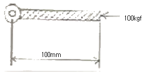
- 0
- 1
- 100
- 10000
(정답률: 48%)
29. 지름 10 mm의 강 봉에 최대 500 kgf의 하중을 메달았을때 안전율은? (단, 강의 극한 강도는 3000kgf/cm2이며, 자중은 무시한다.)
- 3.93
- 4.71
- 0.78
- 6.36
(정답률: 34%)
30. 다음 그림과 같이 양손의 힘을 다르게 하면서 다이스지지쇠를 회전시킬 때 발생하는 토크를 구하면?
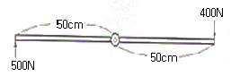
- 400 N･m
- 450 N･m
- 500 N･m
- 550 N･m
(정답률: 65%)
31. 페이지 대체 알고리즘에서 계수기를 두어 가장 오랫동안 참조 되지 않은 페이지를 교체할 페이지로 선택하는 방법은?
- FIFO
- LRU
- LFU
- OPT
(정답률: 34%)
32. "윈도우 98“에서 여러개의 응용 프로그램을 순서대로 전활 할때 사용하는 단축 키는?
- Alt + Shift
- Alt + F1
- Alt + Enter
- Alt + Tap
(정답률: 70%)
33. 다음에서 설명한 메모리의 종류로서 알맞은 것은? (문제 오류로 인해 보기 내용이 정확하지 않습니다. 정확한 내용을 아시는 분께서는 오류신고를 통하여 내용 작성 부탁드립니다. 정답은 2번입니다.)
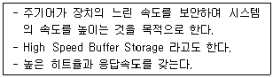
- 복원중
- 복원중
- 복원중
- 복원중
(정답률: 84%)
34. “윈도 98”에서 파일을 삭제하는 방법으로 옳지 않은 것은?
- 휴지통을 이용하여 삭제
- Del(Delete)키를 이용하여 삭제
- Esc 키를 이용하여 삭제
- 마우스의 오른쪽 버튼을 이용하여 삭제
(정답률: 80%)
35. 운영체제를 구성하고 이는 시스템 프로그램 중 제어프로그램에 해당하는 것은?
- 처리 프로그램
- 서비스 프로그램
- 작업 관리 프로그램
- 언어 처리 프로그램
(정답률: 55%)
36. 운영체제의 성능평가 항목으로 가장 거리가 먼 것은?
- 신뢰도
- 처리능력
- 비용
- 사용 가능도
(정답률: 86%)
37. 운영체제의 목적과 가장 거리가 먼 것은?
- 성능 향상
- 응답시간 단축
- 단위 작업량의 소형화
- 신뢰성 향상
(정답률: 60%)
38. “윈도 98”의 플러그 앤 플러그(plug & play) 방식에 대한 설명으로 옳은 것은?
- 주변장치를 장착하면 스스로 장치를 인식하는 방식이다
- 동영상과 음향을 동시에 실행하는 방식이다.
- 여러 개의 프로그램을 동시에 실행하는 방식이다.
- 전화를 이용한 통신에 사용하는 방식이다.
(정답률: 59%)
39. 다음 문장의 ( )안에 알맞은 내용은?
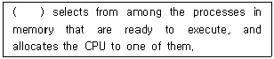
- Cycle
- Spooler
- Buffer
- Scheduler
(정답률: 38%)
40. 다음 문장의 “this system"이 의미하는 것은?
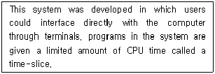
- time-sharing
- multi-processing system
- batch system
- single user system
(정답률: 31%)
3과목: 자동제어
41. 다음 회로는 어떤 회로를 나타낸 것인가?
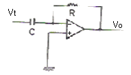
- 가산기 회로
- 미분 회로
- 적분 회로
- 차동 증폭기 회로
(정답률: 64%)
42. 다음 중 PLC 운전을 위한 프로그래밍 순서로 가장 적당한 것은?
- 로딩 → 코딩 → 입･출력할당 → 시뮬레이션
- 시뮬레이션 → 입･출력할당→ 로딩 → 코딩
- 입･출력할당 → 코딩 → 로딩 → 시뮬레이션
- 코딩 → 시뮬레이션 → 입･출력할당 → 로딩
(정답률: 55%)
43. 다음 논리회로의 출력 X는?
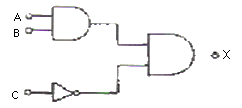
- ABC
- (A+B)C
- A+B+C
- ABC'
(정답률: 57%)
44. 단위 계단 함수 u(t)의 라플라스 변환은?
- u(us)
- 1
- s
- 1/s
(정답률: 68%)
45. 1차 뒤진 요소의 인디셜(indicial) 응답기에서 응답시간이 시상수(T=CR)와 같을 때의 응답값은 정상상태의 몇 %가 되는가?
- 34.5
- 63.2
- 70.7
- 83.5
(정답률: 57%)
46. 다음 중 PLC에서 가장 많이 사용되고 있는 방식으로서 릴레리 회로와 유사한 형태로 표시 할 수 있도록 작성하는 프로그래밍 입력 방식은?
- 래더도 방식
- 명령어 방식
- 논리기호 방식
- 플라루차트 방식
(정답률: 63%)
47. 다음 블록 선도의전달함수의 값은?
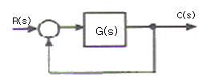
- 1+1/G(s)
- G(s)/{1-G(s)}
- G(s)/{1+G(s)}
- 2G(s)
(정답률: 61%)
48. NC 공작기계에서 사용하는 윤활제의 역할로서 틀린 것은?
- 공작물과 공구 절삭날로부터 열을 빼앗아 냉각시키는 작용
- 동력소비의 증가
- 칩과 공구 윗면 사이의 윤활작용
- 공구마멸의 감소
(정답률: 86%)
49. 자동화에서 센서를 이용할 때 고려하여야 할 사항 중 틀린 것은?
- 제조회사
- 신뢰성과 내구성
- 반응속도
- 정확성
(정답률: 75%)
50. PLC에는 기본적으로 여러 유니트를 조합하여 설치한다. 다음 중 PLC의 기본 유니트에 해당 되지 않는 것은?
- 전원 유니트
- 로더 유니트
- CPU 유니트
- 입출력 유니트
(정답률: 55%)
51. 아날로그 신호를 디지털 신호로 변환하는 장치는?
- CPU
- ROM
- RAM
- A/D 변환기
(정답률: 80%)
52. 물체의 위치, 각도, 자세 등의 변위를 제어하는 것은?
- 세보제어
- 자동조정
- 추종제어
- 프로그램 제어
(정답률: 79%)
53. 다음 중 광전 센서의 일반적인 특징이 아닌 것은?
- 비접촉식으로 물체를 검출 한다.
- 검출물체의 대상이 넓다.
- 응답속도가 느리다.
- 검출거리가 길다.
(정답률: 68%)
54. 다음 중에서 서보모터의 특성을 잘못 설명한 것은?
- 속도 응답성이 좋아야 한다.
- 제어성이 좋아야 한다.
- 빈번한 시동 및 정지운전이 연속적으로 이루어지더라고 기계적 강도가 커야 한다.
- 관성이 크고, 전기적 또는 기계적 시상수가 커야한다
(정답률: 63%)
55. 불 대수의 연산을 표시한 것 중 틀린 것은?
- A+0 = A
- A(A+B) = AB
- (A+B)(A+C) = A+BC
- A･A = A
(정답률: 37%)
56. 다음 설명에 합당한 제어기 명칭은?
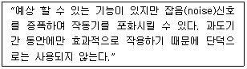
- 미분 제어기
- 비례-적분제어기
- 적분제어기
- 비례제어기
(정답률: 38%)
57. 다음 그림과 같은 시퀀스를 코딩할 때 빈칸에 해당되는 명령어는?
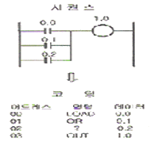
- LOAD
- OR NOT
- OR
- AND
(정답률: 64%)
58. 자동차 운전시 운전자는 자동차의 가속을 위해서 악셀레이터(Accelerator) 페달(pedal)을 사용하는데 이때 페달(pedal)의 각도를 검출하기 위한 신호 전달 과정으로서 가장 적합한 것은?
- 페달 - 엔코더 - D/A컨버터 - CPU
- 페달 - 엔코더 - A/D컨버터 - CPU
- 페달 - A/D컨버터 - 포텐쇼미터 - CPU
- 페달 - 포텐쇼미터 - A/D컨버터 - CPU
(정답률: 30%)
59. PLC의 DIO(Digital Input Output) 장치에 인테페이스 하기에 적절치 못한 소자는?
- 토글 스위치
- 광전 스위치
- 온도 센서
- 근접 센서
(정답률: 46%)
60. 다음 그림과 같은 회로에서 입력 전류에 대한 출력 전압의 전달함수는?
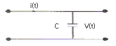
- Cs
- 1 / Cs
- C / 1+sT
- C
(정답률: 62%)
4과목: 메카트로닉스
61. 유압 시스템에서 실린더가 불규칙적으로 작동되고 있다. 다음 중 고장원인이 아닌 것은?
- 밸브의 작동불량
- 펌프의 성능불량
- 과부하 작동
- 작동유 과다
(정답률: 31%)
62. 최근의 자동화 시스템은 PLC를 많이 채택하고 있다. 다음중 PLC는 어느 영역을 담당하는 장치인가?
- 센서(sensor)
- 엑추에이터(actuator)
- 프로세서(processor)
- 소프트웨어(software)
(정답률: 38%)
63. 자동화의 5대 요소와 관계가 먼 것은?
- 센서
- 엑추에이터
- 프로세서
- 코스웨어
(정답률: 81%)
64. 압력 센서 중 로드 셀의 구조 특징이 아닌 것은?
- 구조가 간단하다.
- 수명이 짧다.
- 수 g에서 수백 ton 까지 측정할 수 있다.
- 고 정밀도의 측정이 가능하다
(정답률: 34%)
65. 다음 그림의 아라고(Arago)의 회전 원판 실험과 같이 비자성체인 알루미늄 혹은 구리로 만들어진 원판위에서 화살표 방향으로 영구 작석을 회전시키면 원판도 자석의 방향으로 함께 회전하는 원리를 이용한 전동기는?
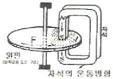
- 유도 전동기
- 직류 전동기
- 스테핑전동기
- 선형 전동기
(정답률: 50%)
66. 다음 중 공압 모터의 장점에 해당되지 않은 것은?
- 회전 속도, 토크를 자유롭게 조정할 수 있다.
- 폭발의 위험성이 있는 환경에서도 안전하다.
- 과부하시에도 위험성이 없다.
- 에너지 변환 효율이 높다.
(정답률: 46%)
67. 정전 용량형 근접스위치로 검출시 가장 민감한 것은?
- 종이
- 유리
- 물
- 목재
(정답률: 45%)
68. 다음은 PLC를 이용한 시스템에 대한 설명이다. 맞는 것은?
- 배선, 배관 없이 시스템이 완성될 수 있다.
- 릴레이 제어처럼 PLC회로도가 배선도 이다.
- 프로그래밍과 배선 등 하드웨어의 준비가 동시에 병행될 수 있다.
- 고정 결선에 의한 제어시스템 이라고 한다.
(정답률: 46%)
69. 다음 실린더의 고정 방식 중 축심이 고정되어 있는 것은?
- 볼형
- 클렌비스형
- 플랜지형
- 트러니언형
(정답률: 57%)
70. 다음 중 두 개의 복동 실린더가 한 개의 실린더 형태로 조립되어 있는 것은?
- 탠덤실린더
- 피스톤실린더
- 양로드형실린더
- 벨로스실린더
(정답률: 45%)
71. 제어 시스템에 사용되는 작업요소의 작업 순서가 여러 줄에 나뉘어 표시되어 액추에이터의 상호관계가 스텝별로 쉽게 비교될 수 있는 것은?
- 논리도
- 기능선도
- 변위 선계도
- 래더 다이어 그램
(정답률: 39%)
72. 시스템의 고장을 미연에 방지하는 목적으로 점검, 검사, 시험, 재조정 등을 정기적으로 행하는 보전방식은?
- 예지보전
- 사후보전
- 예방보전
- 개량보전
(정답률: 72%)
73. 자동제어 시스템을 선택해야 할 경우는?
- 특징과 영향을 확실히 알고 있는 하나의 외란 변수만 존재 할 때
- 외란 변수의 변화가 아주 작을 때
- 외란 변수에 의한 영향이 무시할 정도로 작을 때
- 외란 변수들의 특징과 값이 변할 때
(정답률: 47%)
74. 메모리의 단위를 크기 순으로 정열한 것 중 옳은 것은?
- bit ＜ kbyte ＜ Mbyte ＜ Gbyte
- kbyte ＜ Mbyte ＜ Gbyte ＜ bit
- Mbyte ＜ Gbyte ＜ byte ＜ bit
- Mbyte ＜ bit ＜ kbyte ＜ Gbyte
(정답률: 68%)
75. 유압시스템에서 밸브작동 불량의 원인이 아닌 것은?
- 밸브 스프링의 작동 불량
- 솔레노이드의 소손
- 어큐뮬레이터의 압력 변화
- 작동유의 온도가 높음
(정답률: 34%)
76. 전기 시스템에서 전동기 저속 회전의 원인이 되는 것은?
- 권선의 접지
- 과부하
- 단상운전
- 퓨즈의 단락
(정답률: 27%)
77. 동기화된 SR 플립플롭의 부정상태를 보완하도록 개량된 플립플롭은?
- 주종속 플립플롭
- T플립플롭
- JK플립플롭
- SR 래치회로
(정답률: 47%)
78. 다음의 제어방식 중 프로그램 제어 방식이 아닌 것은?
- 시간에 따른 제어
- 파일럿 제어
- 조합 제어
- 시퀸스 제어
(정답률: 52%)
79. 온도계나 컬러 TV의 색 차이 방지용 온도보상에 사용되는 것으로 열 팽창 계수 차이가 있는 두 금속을 접합한 것은?
- 바이메탈
- 세라믹
- 도전성고무
- 자기 저항제
(정답률: 58%)
80. 자동화를 위한 센서의 선정 기준이 아닌 것은?
- 생산 원가의 절감
- 생산 공정의 합리화
- 생산 설비의 자동화
- 생산 체제의 전형화
(정답률: 29%)